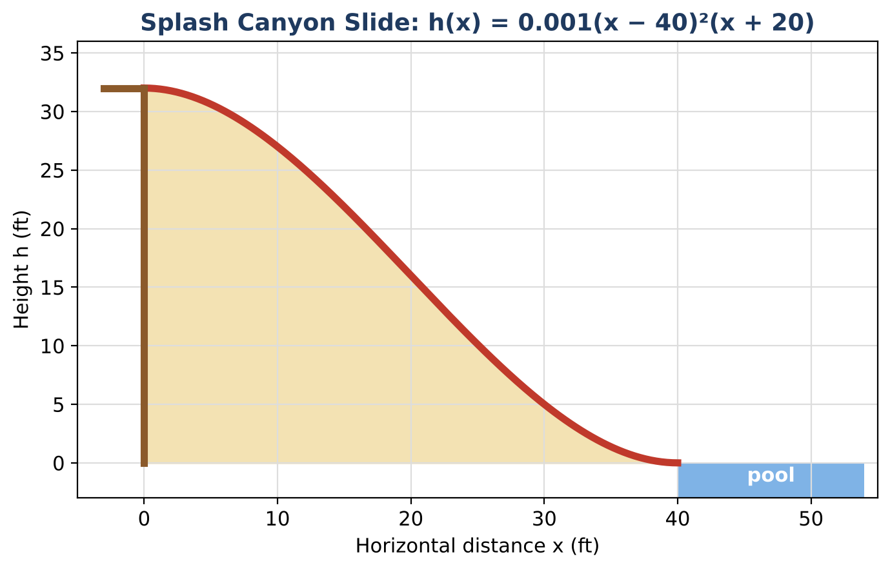

CP2
Guided version: step-by-step prompts, starter tables, sentence starters, and friendly numbers.
Design a smooth water slide with polynomial zeros, multiplicity, and end behavior.

Students analyze and design a water slide profile modeled by a cubic polynomial. They evaluate and graph it, connect zeros and multiplicity to a smooth landing, use synthetic division and the Remainder and Factor Theorems, apply the Rational Root Theorem, and design their own slide.
Guided version: step-by-step prompts, starter tables, sentence starters, and friendly numbers.
Standard version: students set up and solve problems with less scaffolding.
Extension version: generalize, justify, and design with open-ended constraints.